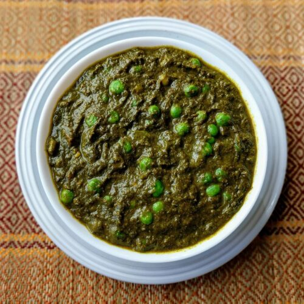

Palak Matar
Ingredients
- 🥬 Spinach – 500 g
- 🍅 Tomato – 1
- 🧅 Onion – 2 medium
- 🟢 Green peas – 1 cup
- 🌿 Kasuri Methi
- 🌰 Cumin & Jeera seeds
- 🧂 Turmeric, Chilli, Salt
- ✨ Dhaniya, Garam Masala

Method
- 🥬 Boil spinach for 3 minutes.
- ❄️ Transfer spinach to cold water.
- 🌀 Grind into a smooth puree.
- 🔥 Heat oil in a pan.
- 🌰 Add cumin and jeera seeds.
- 🧅 Add chopped onions.
- ✨ Sauté until golden brown.
- 🧄 Add ginger–garlic paste.
- 🍅 Add chopped tomato and cook.
- 🧂 Add spice powders.
- 🟢 Add peas and cook.
- 🌿 Add spinach puree, kasuri methi & simmer 😋